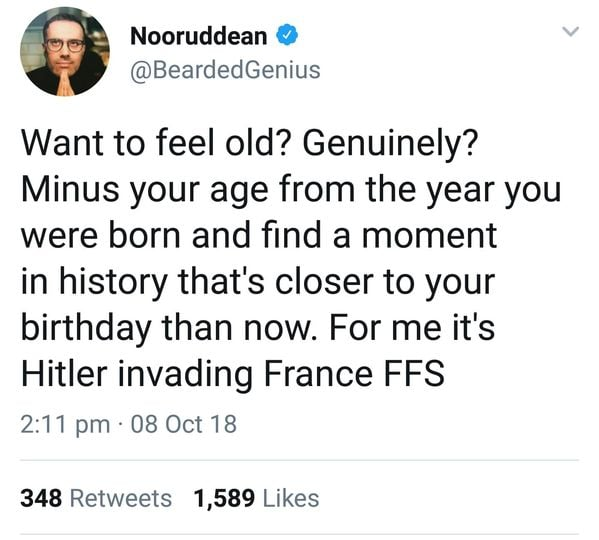

Note: The following post was originally published as an album on Facebook. I’ve retroactively extracted it here.
I meant to post this a few weeks ago when this was going around FB/Twitter, but it’s taken a bit for me to finish writing it up. I think now is as good a time as any for some historical perspective.
Subtract your age

I am currently 41.7 years old. 83.3 years ago, on Aug 6, 1937, newly elected L.A. City Councilman Howard E. Dorsey drove off the edge of the Rim of the World Highway, tumbled down a cliff, and died. Certainly not as notable an event as some of the other ones people are picking, but hear me out — I think there’s an apropos morality tale or two in this history.
Winfred Sanborn
The personal significance of Howard E. Dorsey’s death is not that his aunt, L.A. Schools Superintendent Susan Dorsey, gave her name to my mother’s high school, also in 1937, though that is pretty cool too. Howard Dorsey got his start as the campaign manager for my great-great-grandfather Winfred Sanborn (pictured), who had served as an L.A. City Councilman throughout the 1920s, and when Dorsey died, Winfred was appointed to complete his term. Winfred first joined the city council in 1919, and left the council for the second time 20 years later. A lot had changed in that time…
Influenza
After careers in the postal service and undertaking, Republican Winfred Sanborn was elected in the summer of 1919, when the population of Los Angeles was just over half a million people. He is remembered in the family as a multi-talented and kind man. The Spanish Flu had just hit L.A. hard that winter, and there had been major protests and lawsuits against mandatory masks, and closures of churches, theaters and schools. By one count, 2713 people died of the flu during 1918 and 1919 in Los Angeles, about 25% of deaths over that time period.
Nurses Resign
At the Los Angeles County Hospital, Black students had been barred from the training school for nurses, up until the previous fall. Throughout WW I the L.A. chapter of the NAACP had campaigned to open the program to Black students, on the practical matter that Black nurses could have been saving lives in the war effort. When Black student nurses were finally admitted to help with the flu epidemic, 126 white student nurses resigned in protest.
Not KKK
Hollywood had released D. W. Griffith’s The Birth of a Nation just 4 years before. More widely in America, 1919 was the year of the “Red Summer”, when riots in dozens of cities across the United States targeted Black communities. My grandfather Mario was a seven-year-old living on the outskirts of Chicago, where one of the largest massacres occurred. At least 38 people were killed, hundreds more were injured, and about 1000 Black families were left homeless. Inspired by The Birth of a Nation and the Red Summer, KKK membership reached 5 million people in the mid 1920s. In 1919, the LA Times could joke about soldiers in flu masks resembling a KKK rally.
Immigration
1919 was also the year that my five-year-old grandmother Genoveva crossed the border from Sonora, Mexico, escaping from the civil war there. The family settled in Los Angeles, west of downtown. The following decade saw dramatic immigration and growth in L.A. — the population of L.A. doubled from 1920 to 1930, while the population of Mexican Americans in the city tripled.
Prison Special Tour
It was also in 1919 that suffragists launched the “Prison Special Tour”, holding rallies across the country wearing prison clothes as a reminder of the prison terms that many of them had endured over the previous few years for crimes like holding open-air meetings, silently picketing the White House, and holding a banner quoting the Declaration of Independence: “Governments derive their just powers from the consent of the governed.” They were again sometimes attacked by crowd members or arrested, but it bent public attention to make it a national priority, leading to the 19th amendment, recognizing women’s right to vote, being passed by Congress and submitted to the states for ratification. It was also in 1919 that the 18th amendment was ratified, prohibiting the production and sale of alcohol. The prohibition of alcohol lead to a marked increase in corruption and mafia influence in Los Angeles. The recognition of women’s right to vote, as momentous as it was, had smaller influence, at least initially.
Polarization and inequality

1919 was also a crest in political polarization and income inequality. Through the roaring 20s, income inequality creeped further up, while political polarization started to fall, perhaps broken by the patriotism surrounding WW I. It was finally the New Deal policies of the Great Depression, and the patriotically high taxes of the WW II war effort that brought inequality back down, and laid the foundation for the shared prosperity of the post-war boom.
President Wilson

One of Winfred’s first official activities was welcoming President Wilson on his arrival to Los Angeles in September 1919, part of Wilson’s campaign to gain support for forming the League of Nations. Wilson’s health was already failing (possibly from complications of the flu), and he would have a debilitating stroke in October. Also in October he was awarded the Nobel Peace Prize for his efforts to form the League of Nations, but in his weakened state, he was unsuccessful in convincing the United States to join, and the United States turned towards isolationism.
L.A. River Crossings
With the exception of the rising corruption, none of these issues seem to have been major concerns of Winfred’s years on the city council. I like to imagine his experience in the undertaking industry during the flu epidemic must have influenced his decision to run for city council, and one of his committee memberships was the Public Health and Sanitation committee. But his primary motive and major effort throughout the 1920s was on improving the transportation system, especially in connecting East L.A. to downtown, such as the system of viaducts crossing the L.A. river, including the 9th Street crossing shown here.
Betty Hill
In 1926, the Los Angeles Playground Commission officially segregated most of the public swimming pools in the city. For the “public welfare”, swimming pools were designated for whites only except for one day a week, called “colored day” or “international day”. Activist Betty Hill (pictured on left) was affiliated with the NAACP but carried out most of her activism through her neighborhood association and a group she started, called the Republican Women’s Study Club. Immediately after the decision was made to segregate the swimming pools and for the next five years, Betty Hill led a series of boycotts and lawsuits to push the city to reverse the decision. Initial judicial rulings allowed the segregation on “separate but equal” grounds, because there was one swimming pool in the city that allowed children of all races throughout the week. Finally in 1931, a judge ruled that the city had to integrate the swimming pools. Three times the city council voted on whether to contest the ruling, twice while Winfred was in office and once after he left. Each time, the city narrowly declined to contest the ruling. I don’t know how Winfred voted, and it was not a significant issue in that election. Similar practices of “Mexican Mondays” at public pools were known elsewhere in California, as late as 1944 in San Bernardino.
Deportations
The primary issues of the 1931 election were about public versus private ownership of the city utilities. Winfred was not strongly on either side of the issue, but he was opposed by the Police Chief James Davis (who at least initially was intent on reforming the city government) and he lost his re-election campaign. 1931 was also a difficult year all-around. 16 year-old Genoveva had dropped out of school the year before, to help support the family. There were bread lines and hunger marches, and Los Angeles County deported legal residents and even many citizens to Mexico.
Light Festival
By 1937, when Winfred Sanborn was reappointed to the city council, Los Angeles had reached 1.5 million people. The first LA freeway was under construction, and electricity from the Hoover Dam had just reached the city the year before, prompting the light festival shown in the picture. By 1940, L.A. would be pulling its drinking water all the way from Mono Lake, beyond Yosemite.
LAPD Bombings
The corruption in city goverment had reached a crisis point. In October 1937, the L.A. Police bombed the house of Clifford Clinton, a grand jury member who was leading an investigation of Mayor Frank Shaw. In January 1938, the LAPD then bombed the car of Harry Raymond, a private investigator working with Clinton. The picture shows Clinton and Raymond after the second bombing.
Los Angeles Police Department
When it was clear that the LAPD was responsible, Mayor Shaw was recalled from office, and the successor, Mayor Bowron worked with the grand jury to remove Police Chief Davis and clean the corruption out of the police department and city government. He also appointed the first African American and the first woman to the police commission. Winfred was not particularly associated with either Mayor Shaw or Mayor Bowron, but due to the anti-incumbent mood, he was not re-elected in 1939.
Interracial Marriage
In 1948, the year after Winfred died and the year before his granddaughter, my Grandma Lynette got married, the California Supreme Court ruled that the Los Angeles County Clerk could not deny a marriage license to Mexican American Andrea Perez and African American Sylvester Davis, finding that California’s laws against mixed race marriages were unconstitutional. 20 years later, the US Supreme Court ruled that all such state laws were unconstitutional. Still it was 30 more years, the same year I graduated high school, before a narrow majority of US residents approved of interracial marriages.
Equal Rights Amendment
The same women who championed the 19th amendment in 1919 introduced the Equal Rights Amendment in 1923. It was finally passed in Congress 50 years later with wide bipartisan support, but the process stalled out during ratification. In January 2020, Virginia became the 38th state to finally ratify the amendment, which would have been the criterion for enacting it, but because of expired deadlines and revoked ratifications, the status of the Equal Rights Amendment is still in limbo.
History is still here with us
To be terribly unsubtle, here are some lessons I see:
- History has changed so much and yet it is still here with us. The children of my grandmothers’ generation–who were taught that it was a health risk to swim with Black kids and that Mexican American kids belong in Mexico, and shouldn’t marry each other–overcame enormous obstacles and their own prejudices to create the good old days of my generation’s childhood.
- The arc of history that “bends towards justice” is loooong, and doesn’t bend on its own. People bend it.
- The smart and nice people we often admire, who take centrist views on the issues of the day, are essential for a civil society, but they won’t be the leaders who bend history towards justice. Though they may well be the deciding vote when the tide changes.
- If you, like me, are one of those people who like civil society, take a good hard look at what your positions will look like in 50 or 100 years. Use the influence you have to make history step lively towards justice.
- The current levels of polarization and inequality are serious problems, but they can be fixed. We need to remind each other that we are on one team against the forces that threaten to destroy human society, find common ground, and work together like we are fighting a war–not with each other, but with poverty, climate change, dehumanization, etc.
- Elections matter, but they are just the beginning. If you don’t like your options, make your favorite options happen. If you do like your options, don’t count on your heroes to do the right thing. They are human too, and may need some prodding from time to time.
- This epidemic will pass. Eventually enough of us will be doing some combination of masking+distancing+testing+tracing that the uncontrolled spread will be stopped. Let’s get there ASAP, and don’t let racism and classism compound the problem. We are literally all in this together.